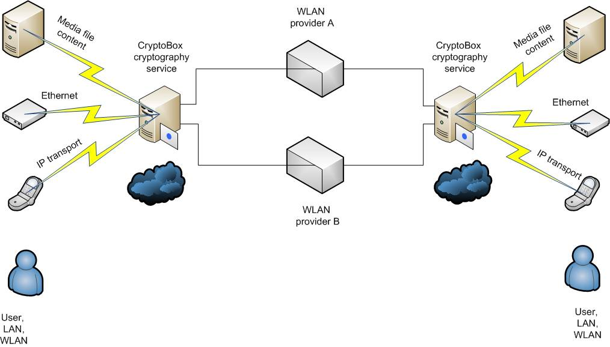
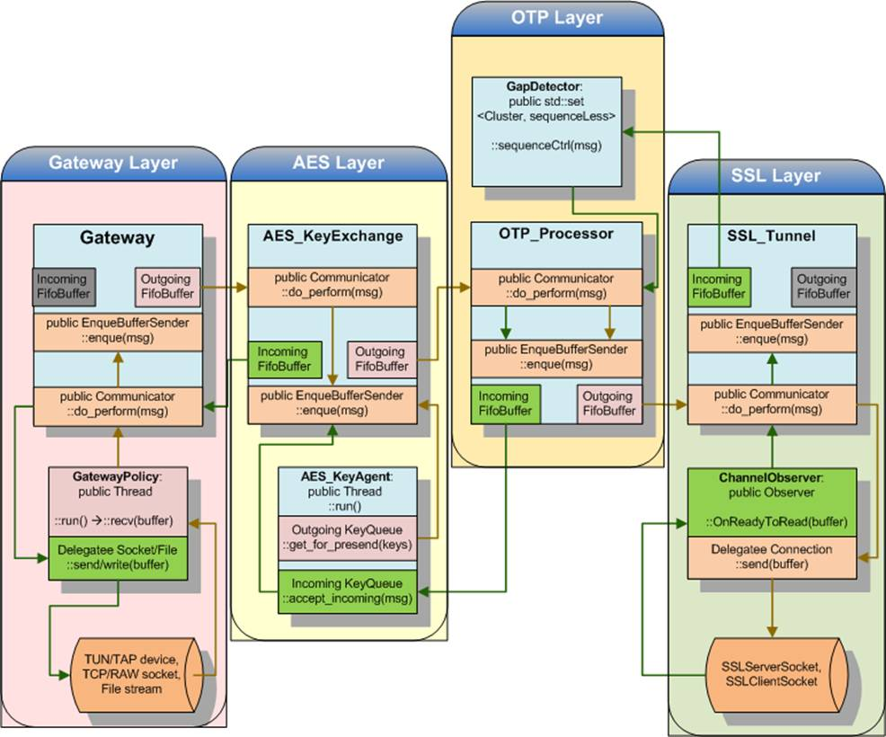
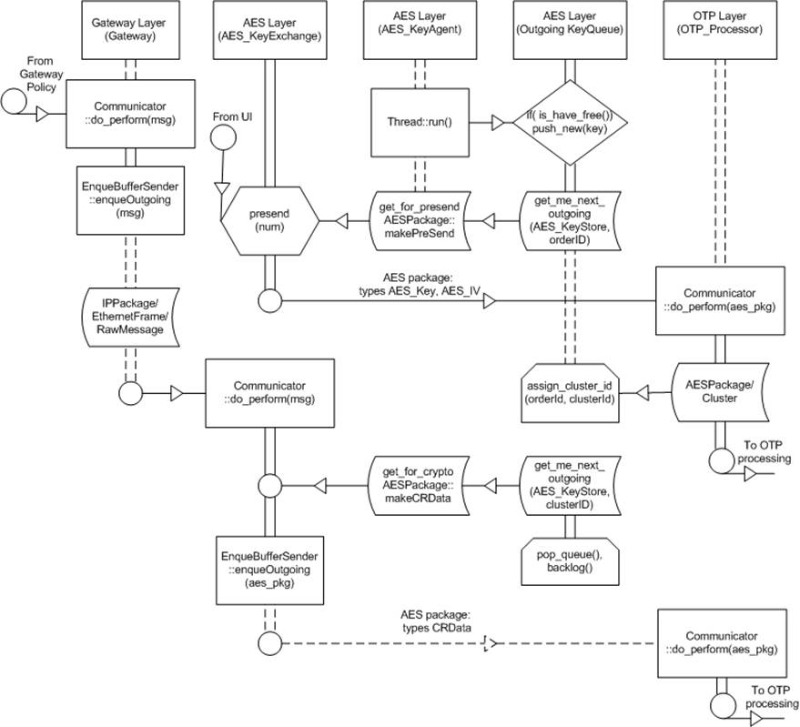
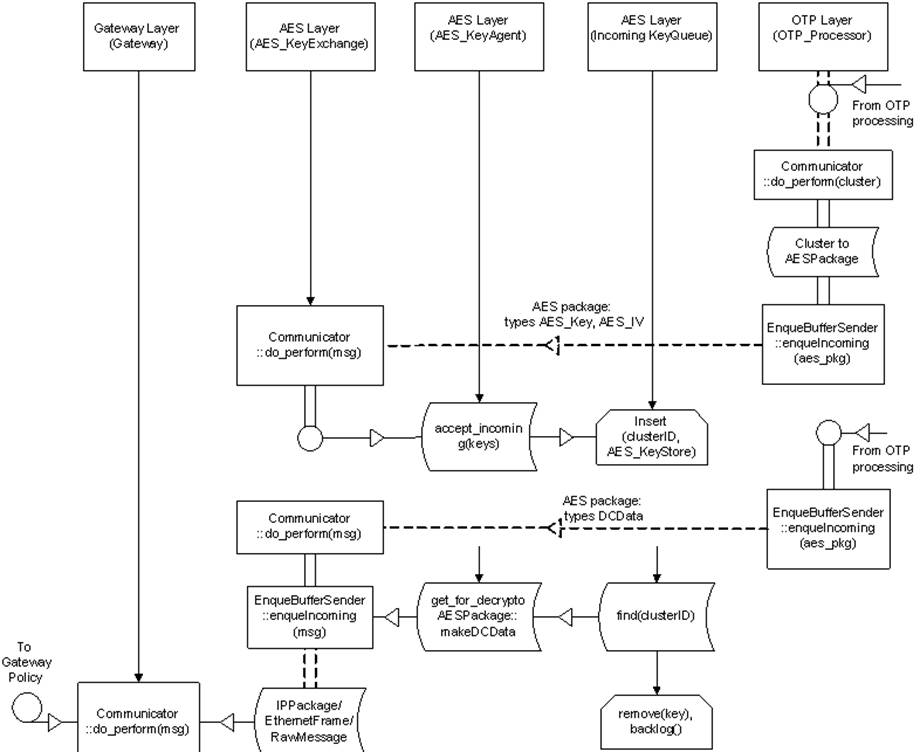
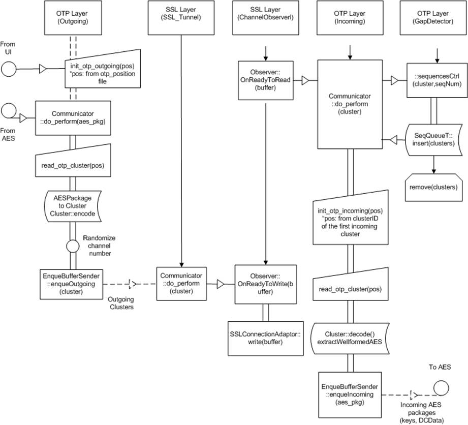
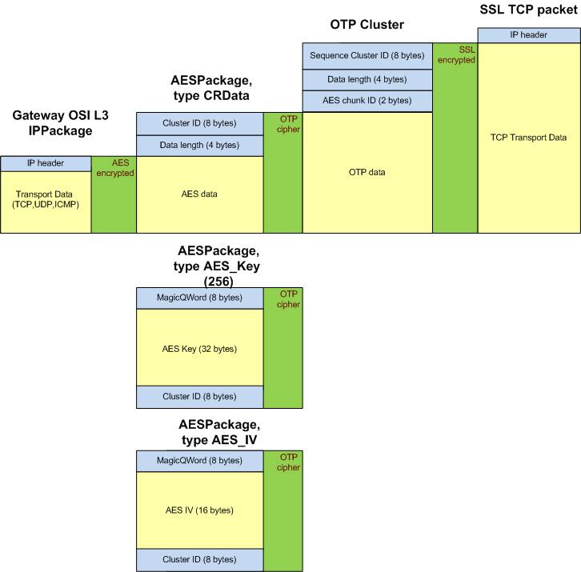

CryptoBox
Network Cryptography Tool
Technical
Specification
Alexander Gandzyuk
© 2015
Table of Contents
·
Overview
·
Projects, files and directories
·
Messages
·
Issues
Overview
The common chart how CryptoBox working with clients as service or standalone application:

·
What’s
meaning the cryptography service?
CryptoBox utility can be adjusted as the cryptographer bridge or the gateway on interface with client which uses any device for communication with this interface.
Client may have Ethernet, PPPoE, ISDN, modem, mobile or any other devices which provides TCP/IP protocol for linkage.
CryptoBox keep
an all incoming traffic of TCP/UDP packages and encrypt them then sending to
remote node in the global network where CryptoBox may decrypt this packages and
give it to receiver.
To arrange, client must have just a physical connection or conducted channel
with CryptoBox service and doesn’t keeps any alternate channel with recipient
bypassing the CryptoBox.
We have no any instruments to define why our encrypted package has been received later than earlier duplicated package from some anyway.
Hence hardware connections, routing, gateway and firewall settings are very important for adjusting of cryptography on the way.
·
Why there
are differences between File data content, Ethernet or IP transport on the
schema?
The utility is designed for the network data transfer by means of listening and sending through the network interfaces of Ethernet frames OSI L2 (data link), IP packages OSI L3 (network link), as well as a files encapsulated in TCP transport ref1 via SSL.
It depends on the environment of service using and on goal of cryptography or possible a testing.
CryptoBox are able to listening on three OSI levels, but not an all at once.
So parameters of listening must be configured before the application startup.
We may also customize the environment relatively with OS settings or with any other testing environment with some software bridges, routers, virtual network emulators.
In any case we should listen or sockets on channel level L2 or the network layer L3, or raw data from TUN/TAP, interprocess communications, pipes or entire file content.
The basically and well tested on current version of CryptoBox are the TUN listening (virtual point-to-point device interface) and reading/transmit the raw data from a file.
Other methods are developed, but their setup too difficult for testing and setup without the special routing functions.
• What are the two WLAN channels which shown on the schema
and how does the sync of data throughput?
This is two independent physical connections which are working as one, but throughput of data is dependent from two WLAN providers which can give a different speed.
Data from the sender always are separated randomly on channel A and channel B, but still will be collected together on the receiver side.
Therefore to calculate the average bandwidth we need to take into account the provider with lowest bandwidth and then multiply it on 2.
·
What are
methods of cryptography in CryptoBox, how it the stable from attack and
possible unauthorized decoding?
On 1-st, the data transfer can be ommited between two hosts on one of two channels but not on two at once.
On 2-nd, when receiver is not obtained the one encrypted data fragment or AES key fragment it will reports an error and CryptoBox will be stopped.
But sender will try to send the data by the secondary channel when the primary channel reported a connection error for example.
Maybe it gives some hole which allows to does an unauthorized access to data from the different channels.
However, using the methods of cryptography on three security levels does it an impossible to decode.
Three levels of cryptography:
1. Symmetric ref2 encryption AES 256 with disposable created keys in queue, each of which can be applied only once for a fixed amount of bytes transmitted between hosts.
2. Symmetric encryption OTP (One-Time Pad or analogue of Verrnam Cipher), where OTP template is the huge file with the pseudorandom bytes content and given on SSD disks ref3 .
3. Asymmetric encryption provided by SSL tunnel and exchanging of SSL certificates.
This order of security levels in accordance with paragraph numbering.
Projects, files and directories
The CryptoBox sources can be obtained from repository https://github.com/vbeliavski/qcube
libcommonlib.a (commonlib.lib):
The static library of basic classes set used in CryptoBox.
Has the Linux/Windows 32 or 64-bit platforms portability.
Used for threads, files, synchronization, memory management, time functions, TCP client-server architecture support, RAW and PACKET sockets.
./qcube/commonlib/include/* – commonlib library headers;
./qcube/commonlib/src/* – commonlib library sources;
./qcube/commonlib/src/Makefile
./qcube/commonlib/Makefile
./qcube/commonlib/commonlib.pro
./qcube/commonlib/commonlib.vcproj
– GNU make, QTCreator, MS Visual Studio project files accordingly.
./qcube/commonlib/lib – directory where the compiled static library commonlib will be placed
libcryptossl.a (cryptossl.lib):
The static library of wrapping classes for OpenSSL externals, functions.
Used in SSL layer of CryptoBox.
Has the Linux/Windows 32 or 64-bit platforms portability.
./qcube/cryptossl/include/* – cryptossl library headers.
./qcube/cryptossl/src/* – cryptossl library sources.
./qcube/cryptossl/*.cpp, *.h – sources for SSL automatic test cases (excluded from the common compilation).
./qcube/cryptossl/*key*, *pem* – some testing certificate data for SSL automatic test cases.
./qcube/cryptossl/src/Makefile
./qcube/cryptossl/Makefile
./qcube/cryptossl/cryptossl.pro
./qcube/commonlib/cryptossl.vcproj
– GNU make, QTCreator, MS Visual Studio project files.
./qcube/cryptossl/lib – directory where the compiled static library cryptossl will be placed
cryptoclient (cryptoclient.exe):
The simple TCP client application.
It has been used for CryptoBox testing earlier, during the development cycle (on stage of CryptoBox TCP proxy).
Has the Linux/Windows 32 or 64-bit platforms portability.
./qcube/cryptoclient/* - sources and project files (GNU make, QTCreator, MS Visual Studio).
./qcube/cryptoclient/bin – directory where the executable will be placed after compilation.
cryptoclient (cryptoclient.exe):
The sample of clients TCP connection works.
It has been used for CryptoBox testing earlier, during the development cycle (on stage of CryptoBox TCP proxy).
Has the Linux/Windows 32 or 64-bit platforms portability.
./qcube/cryptoclient/* – sources and project files (GNU make, QTCreator, MS Visual Studio).
./qcube/cryptoclient/bin – directory where the executable will be placed after compilation.
sniffer, simpletun:
Some tools for Raw sockets sniffing, TUN/TAP interfaces listening.
Compilation is under Linux 32/64 platforms only.
./qcube/sniffer/* – sources and project files (GNU make, QTCreator)
cryptobox (cryptobox.exe):
CryptoBox main application.
Has the Linux/Windows 32 or 64-bit platforms portability.
Some networking functions are disabled in Windows compilation (Raw sockets usage, TUN/TAP interfaces listening).
./qcube/cryptobox/include/* – cryptobox app headers;
./qcube/cryptobox/src/* – cryptobox app sources;
./qcube/cryptobox/src/Makefile
./qcube/cryptobox/Makefile
./qcube/cryptobox/cryptobox.pro
./qcube/cryptobox/cryptobox.vcproj
– GNU make, QTCreator, MS Visual Studio project files accordingly.
./qcube/cryptobox/bin – directory where the executable will be placed after compilation.
./qcube/cryptobox/bin/clean.sh, clean.bat – script files for cleaning of logs and working files created during the CryptoBox work.
./qcube/cryptobox/bin/ca.key, ca.pem – certificate files used for CryptoBox SSL self-signed validation.
./qcube/cryptobox/test/tester (tester.exe)
Application with automatic test cases for CryptoBox functions/layers.
./qcube/cryptobox/test/*.cpp, *.h – the sources of tester;
./qcube/cryptobox/test/ca.key, ce.pem – the certificate files used in SSL self-signed validation for SSL layer testing cases;
./qcube/cryptobox/test/ Makefile
./qcube/cryptobox/test.pro
./qcube/cryptobox/test.vcproj
– GNU make, QTCreator, MS Visual Studio project files accordingly.
Compilation
Under Linux projects can built by GNU make or QT Creator. Open SSL (openssl_devel) libraries is the additional requirement what must be installed before.
Windows compilation by *.vcproj files (Microsoft Visual Studio 2008 and later) in each subdirectory where Windows portability is provided.
GNU make is support following targets:
Ø make [commonlib] [cryptossl] [cryptobox] [sniffer] – builds an all targets which included into CryptoBox package compilation as release version.
or make some one or several target(s) from mentioned if it specified in command line.
Ø make debug – enables debug compilation
Ø make release – such as make without parameters
Ø make clean – cleans all object files (but not cleans the already built libraries and executables)
Ø make depend – renews GNU make dependencies and rewrites it in .depend files. It can be useful when some objects are removed or added to assembly.
Architecture
There are four independent layers of the entire implementation, and in the threading models.
Each layer is represented by class EnqueBufferSender and two threads inside as FifoBuffer for incoming data flow and second FifoBuffer for outgoing.
Abstraction Communicator used for packages transferring between the layers. The the package going from Gateway to SSL Layer on the encryption way, and back from SSL to Gateway when it should be decrypted for end-user.

Gateway Layer
Gateway layer accepts IP, Ethernet or Raw frames from socket/file/pipe and enqueue it into outgoing FifoBuffer. What is kind of frames depends on the CryptoBox configuration (see Configuration ref). Incoming FifoBuffer is not used, but in architecture is written as buffer with size 0 bytes. It provides the synchronical transfer from AES layer into Gateway but via control when thread will be stopped.
AES Layer
AES Layer applies the encryption by AES256 for entire content for an each frame including IP or Ethernet headers. The key of encryption is creating and enqueues for fixed amount of transferring data (parameter Gateway.SplitPackagePerKeyBytes in the configuration file).
Thread AES_KeyAgent keep the two queues of AES keys.
Outgoing KeyQueue are generated keys with a size is configuration AES.OutgoingKeysStorageSize. Thread for keys creation works independently from other modules and can keep queue are filled with new keys each time after sending. Keys will be sent to OTP layer as AES packages and after will be encoded by OTP for the remote sending as Cluster(s).
This operation named “Pre-send” operation. A first pre-sending after SSL connection is established and contains the pack of keys with numbers from AES.PresendKeysNumber configuration parameter. Optimally is not so much, about 400-500 keys. AES layer passes one package with one key during the session every time the when frame be encoded by one AES key. Incoming queue keys in CryptoBox always has a keys for decryption on other side with spare keys by this way.
Outgoing packages processing by AES Layer:

Incoming packages processing by AES Layer:

OTP Layer
OTP cipher is an
analogue Veerman coding by One-Time Pad algorithm. The pseudo-random data is taken
from a file or SSD drive and touched by XOR operation on to the payload. Other
side can decode OTP if they has an exact input data (file or SSD) as on cipher
side. In our case, payload data is AES-encrypted packages, keys and data read
from the socket.
For useful and good speed of processing we have not using data in bytes measuring, but with
clusters (4096 bytes) or octets (8 bytes) for XOR deployment.
On first stage the decoder side should get the OTP clusters from sockets (SSL channels), then apply OTP decipher algorithm for raw data excluding OTP cluster header (currently 14 bytes). One cluster can't contain a data more than 4096 bytes. But may has a size less than 4096.
After the deciphering we can find in AES crypted data (CRData), AES keys and AES IV records.
IV record is used for acknowledgement and transfers always by different from AES key channel.
So one moment, which pseudo-random data is read consequentially from the disk? Therefore cannot be obtained again. But when the disc is "coming to end," reading position will be rewind.
Sequences Gap processing
Because the data packets we receive from the two channels, that is a negative point of "racing" because of the different rates.
To prevent the confusing, each cluster has its own sequence number. In turn, each number is also depends from the reading position in file.
Class GapDetector is the ring buffer with std::set<u64,data> sorting. The sorting key is the 8-bytes number and ordering already provided by std sort algorithms without repeated keys, etc. GapDetector waiting for incoming clusters will be delivered which are going as sequences gaps then pushes the cluster hereinafter in right order into the incoming FifoBuffer of OTP layer.
Magic QWord
We used some trick that allows you to look for AES key and its own key IV in data stream in the incoming clusters with a good speed relative to common..
A solution is didn't try to discover and searching the key for AES in cluster again and each time checking all 4096 bytes for the presence of hidden keys. And not use spare regions with key positions in cluster data, etc.
Since deciphering OTP causes a serial XOR of each 8 bytes octet, so we can simply check immediately or region in data is a key or no. Magic QWord is 8-byte octet data which formed from a random data with first two packages in the session. When session is successfull established on SSL and OTP level, when we can receive this "magic" word with the first Key packages.
This not spoiles the security because magic data ciphered by OTP on more high level of encapsulation. And at least, we must obtain data from first and second channels (a first may be random, second - differs from first), because each AES key has the Key IV and they are in different clusters.
Hence, when we found the pattern of Magic Qword in data we have guess what this is AES Key or Key IV data with fixed length. AES Key package equals 48 = 32 bytes AES key + 8 bytes header + 8 bytes tail. AES IV package equals 32 bytes (see ref Messages).
Incoming and outgoing processing by OTP
Layer, SSL Layer:

Messages
This diagram
shows classes for messages objects which used and may be used in CryptoBox.

The base class is Message which located in commonlib
static library (message.h, *.cpp).
This set of methods in Message is useful for working with raw data, buffering,
copy or non-copy object constructions, allocation, reservation and erasing the
memory.
All of them can be used by the class inheritance, in derived classes for example IPPackage, EthernetFrame, Cluster, etc.
RawMessage used for inheritance of network packages with support of some members which encapsulated in some network kind of packages. With help of RawMessage, we can use type casting from one to another type without internal copying.
Some packages are not used in current version. For
example ARP and IP6 packages, but was provided in earlier implementation of
CryptoBox.
This classes leaving at place for future using if we will want to use L2 Packet/Raw sockets listening.
EthernetFrame can be used in case of TAP interface listening, IPPackage in case of TUN interfaces. Currently TAP interface listening is disabled.
AES Package and Cluster the messages types which are using for CryptoBox cryptography and symmetric keys synchronization on AES and OTP layers accordingly.
Splitter classes are using for socket listening on L2 Ethernet: EthSplitter, on IP L3: IPSplitter. RawSplitter for file or raw data with simple splitting by fixed blocks.
On the picture are shown the levels of the
cryptography by layers.

rf: AES chunk ID from the
picture is needed because AES data may consist from IP package with size up to
64K + 12 bytes AES header. But cluster size is limited by 4K.
Configuration
############################################################################
# Gateway configuration section
# Type of interface used for gateway connection.
# Accepts values 'tun', 'tap', 'ethernet' or 'ip'
# Note: currently 'ethernet' and 'ip' types are not
supported
Gateway.Interface.Type = tun
# The name of TUN/TAP interface ("tunm" by
default) used for Gateway connection
# Note: see <Gateway.Interface.Type>
Gateway.Interface.Name = tunm
# The IPv4 address of interface which will be used for
Gateway connection
# Valid only for raw 'ip' sockets listening on network
OSI level 3
# Note: currently is not implemented
Gateway.Interface.IPAddress = 0.0.0.0
# The hardware address of interface (MAC) which will
be used for Gateway connection
# Format is XX:XX:XX:XX:XX:XX where 'XX' is heximal
value of byte in MAC address
# Valid only for raw 'ethernet' sockets listening on
channel OSI level 2
# Note: currently is not implemented
Gateway.Interface.HWAddress = 00:00:00:00:00:00
# Use source file for input data instead the gateway
socket
# Not using when empty or equals 'none'
Gateway.InputDumpFile = none
# Use destination file for output data (decoded)
instead the gateway socket
# Not using when empty or equals 'none'
Gateway.OutputDumpFile = none
# Size of gateway buffer for incoming messages (from
AES decoder) [Kb]
Gateway.IncomingMessagesBufferSize = 0
# Size of gateway buffer for outgoing messages (from
socket or from InputDumpFile) [Kb]
Gateway.OutgoingMessagesBufferSize = 10240
# Maximum size of data what can be crypted with one
AES256 key [Bytes]
# Note: the data amount per one AES key is limited by
1Mb
Gateway.SplitPackagePerKeyBytes = 200000
# Size of recv data block from socket or file [Bytes]
# Package will not be ecrypted while data block with
specified size is not filled,
# or input data from socket buffer or from file will
be splitted by blocks with defined sizes
# Note: the socket buffer is limited by 64Kb
# Note: value "0" disables the static
buffering and recommended for mixed traffic
Gateway.SplitPackagePerSocketBufferBytes = 0
# Enables processing with TCP socket instead Gateway
on <Gateway.eth0.IP> and port number from <Proxy.ListeningPort>
# Optional for using in testing between TCP clients
transactions
# [true/false]
Proxy.Enabled = false
# IPv4 address for Proxy server usage. Parameter is
not considered if 'Proxy.Enabled=false'
Proxy.IP = 0.0.0.0
# Proxy listening port. Parameter is not considered if
'Proxy.Enabled=false'
Proxy.Port = 5401
############################################################################3
# SSL configuration section
# IPv4 address of interface what used for SSL channel
one (server)
SSL.ChannelOne.eth.IP = 127.0.0.1
# Listening port what used for SSL server to channel
one incoming connection
SSL.ChannelOne.eth.Port = 5403
# IPv4 address of interface used for SSL channel two
(client)
SSL.ChannelTwo.eth.IP = 127.0.0.1
# IPv4 address of remote interface on CryptoBox2
(server should be started on the other side)
SSL.ChannelTwo.RemoteIP = 127.0.0.1
# Listening port of the remote CryptoBox2 SSL server
SSL.ChannelTwo.RemotePort = 5409
# Path to CA certificate file
SSL.CertificateFile = ./ca.pem
# Path to certificate private key file
SSL.PrivateKeyFile = ./ca.key
# Password phrase of private key file.
# Used by certificate validation and will be
considered in special modes of SSL security.
SSL.PrivateKeyPassword = CryptoBox
# Path to CA certificates.
# Used by certificate validation and will be
considered in special modes of SSL security.
SSL.VerifyPath = .
# SSL verification mode.
# Values are: 'none', 'client', 'peer', 'fail_nocert'
# May be combined through comma, e.g. 'client,
fail_nocert'
SSL.Mode = none
############################################################################3
# AES module configuration section
# Size of AES module buffer for incoming messages
(decoded from OTP decipherer in waiting for AES processing) [Kb]
AES.IncomingMessagesBufferSize = 5012
# Size of AES module buffer for outgoing messages
(encoded from AES in waiting for OTP cipherer) [Kb]
AES.OutgoingMessagesBufferSize = 5012
# Size of storage used for incoming AES keys [Kb]
# Remainder part of storage above the limitation will
be flushed in backlog file 'aes_backup.in'
AES.IncomingKeysStorageSize = 2048
# Size of storage used for outgoing AES keys (already
pre-sent) [Kb]
# Remainder part of storage above the limitation will
be flushed in backlog file 'aes_backup.out'
AES.OutgoingKeysStorageSize = 1024
# Number of keys which should be pre-sent immediately
after the channels established between boxes
AES.PresendKeysNumber = 512
# Password used for first connect authentification on
AES security level.
# May be used for product licensing, etc. later, but
currently is required only for establishing.
AES.FirstKeyPassword = CryptoBox.v1.0.0
############################################################################3
# OTP module configuration section
# Size of OTP module buffer for incoming messages
(incoming from SSL channel in waiting for OTP decipherer) [Kb]
OTP.IncomingMessagesBufferSize = 10240
# Size of OTP module buffer for outgoing messages
(encoded from OTP cipherer in waiting for sending via SSL channel) [Kb]
OTP.OutgoingMessagesBufferSize = 10240
# Size of buffer for incoming packages which are in
sequences gap [Kb]
# Note: OTP module raises exception in case when
buffer is full and no gaps was resolved.
OTP.SequencesGapBufferSize = 10240
# Size of cache for image clusters which has been read
but should be in memory for sequences gap detection [Kb]
# Note: depricated
OTP.ImageCacheSize = 102400
# Path to OTP image file
OTP.ImageFilePath = ./imageotp
############################################################################3
# Logging configuration section
# Print info about incoming network headers in log
file './<type>_flow.in'
# Note: not valid with gateway emulation or when
Proxy.Enabled=true
# [true/false]
Logging.In.NetworkHeaders = false
# Print info about outgoing network headers in log
file './<type>_flow.out'
# Note: not valid with gateway emulation or when Proxy.Enabled=true
# [true/false]
Logging.Out.NetworkHeaders = false
# Print the data of incoming or outgoing network
packages (exclude headers) in log file './<type>_flow.in/out'
# Note: not valid with gateway emulation or when
Proxy.Enabled=true
# May affects on perfomance in case of large packages
or intensive traffic
# [true/false]
Logging.NetworkPackagesData = false
# Print info about incoming AES packages (decoded from
OTP in AES) in log file './aes.in'
# [true/false]
Logging.AesIn = false
# Print info about outgoing AES packages (encoded by
AES to OTP) in log file './aes.out'
# [true/false]
Logging.AesOut = false
# Print info about incoming OTP packages (from SSL
channels to OTP) in log file './otp.in'
# [true/false]
Logging.OtpIn = false
# Print info about outgoing OTP packages (from OTP to
SSL channels) in log file './otp.out'
# [true/false]
Logging.OtpOut = false
Issues
ref1: It is possible that we can
increase the speed in the perspective what the encapsulation of TCP SSL can be
carried over UDP SSL. Since the sequences numbering of transmission and data integrity already
implemented on higher level, namely in the monitoring of integrity of OTP
clusters transmitted via the Internet.
ref2: Encryption on security level 1
is asymmetrical subjectively because AES key is open but it will be encrypted
at OTP security
level 2 as entire data content from AES.
ref3: For testing may be used any
binary file or own created image on FS. CryptoBox may creates the pseudorandom content by
using: ./cryptobox image <mb>,
where ‘mb’ the number of megabytes.